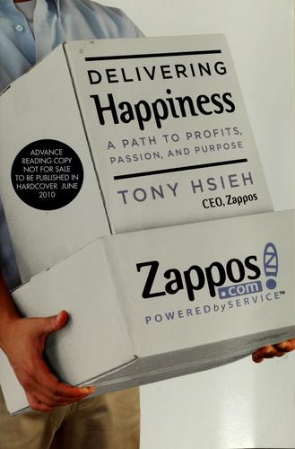

Library › Business & Startups
Delivering Happiness: A Path to Profits, Passion, and Purpose — Summary & Key Lessons

He bet the company on one idea: the brand would be service, and the culture would be the product. The book is the receipt.
📖 OPEN THE FULL INTERACTIVE BREAKDOWN →🌐 Read it in Hindi, Hinglish, Gujarati, Tamil & 22 more languages — free, with audio.
💡 The Big Idea
Hsieh's memoir runs from childhood businesses (a worm farm, button-making) through LinkExchange (sold to Microsoft for $265 million) and the restless investor years, into Zappos: the online shoe store that bet everything on service and culture. The experiments are legendary and real: free shipping both ways, a 365-day return policy, call centers as marketing (no scripts, no time caps; the longest call ran past ten hours), paying unhappy new hires $2,000 to quit after training, culture interviews as a separate hiring gate, and ten core values used as the actual operating system. The 2008 near-death (credit lines frozen) and the 2009 Amazon acquisition (about $1.2 billion, with Zappos keeping its culture) complete the arc. The book ends on the science of happiness; the epilogue belongs to holacracy's later turbulence and Hsieh's sad final chapter, both honest footnotes to a genuine playbook.
🧠 The 8 Key Lessons
Lesson 1: Service Is the Marketing Budget
The Call Center as Advertising
Zappos treated every customer contact as a marketing impression: no scripts, no upsell targets, no time caps, and reps empowered to send flowers or upgrade shipping. The economics: word of mouth replaced advertising spend, and repeat customers grew with almost no acquisition cost. The discipline: if your service is genuinely remarkable, support stops being a cost center and becomes your cheapest growth channel; fund it like marketing, measure it like marketing.
📖 Example: The famous ten-hour-plus customer call (mostly about a pizza, not shoes) cost pennies and generated years of retelling, while a rival's identical budget spent on banner ads vanished without a story. Read the full example →
⚡ Do this: Give your support team one unbudgeted delight action per ticket (no approval needed) and track referrals from delighted customers monthly. Kill the script, keep the story.
Lesson 2: Hire for Culture, Train for Skill
The Two Interviews
Zappos ran two interview tracks: the hiring manager tested skill, a separate culture team tested values fit, and either could veto. New hires got paid training and a quitting offer (starting at $100, rising to $2,000) to leave if they didn't believe: a filter that kept only the converted. The lesson: skills are trainable, values are not, and the quit-offer is the cheapest bad-hire insurance ever devised.
📖 Example: Only a small percentage took the money to leave, and the ones who stayed referred friends who stayed, compounding a culture that customers could literally feel on the phone. Read the full example →
⚡ Do this: Add a values veto to your hiring loop this month, and consider a post-training offer to quit with a bonus. The people you lose to the offer were leaving anyway, slowly and expensively.
Lesson 3: Return Policies Are Trust Priced in Dollars
365 Days, Both Ways
Free shipping both ways and a year to return looked like insanity for a thin-margin retailer, but shoes were the worst category to buy online (fit uncertainty), so removing ALL the risk was the only way to unlock the market. Returns cost money; hesitation cost the category. The principle: find the single biggest perceived risk in your offer and price its elimination into the model, because the customer's fear is the real competitor.
📖 Example: Customers ordered multiple sizes and returned the rest; the data showed returned customers shopped more often and spent more over time, making the return cost an acquisition expense, not a leak. Read the full example →
⚡ Do this: Name your customers' biggest unspoken risk (fit, quality, compatibility, embarrassment). Design a returns/try-before/guarantee mechanic that removes it entirely, then market the mechanic itself.
Lesson 4: Write Values You'll Actually Fire People For
The Ten Core Values
Zappos' ten values (deliver WOW, embrace change, be humble, etc.) were not wall art: they drove hiring, firing, reviews and promotions, and violating them ended careers even for top performers. Most companies' values are aspirational fiction; the test is what gets someone fired. The discipline: write fewer values, each with a firing scenario attached, or don't write them at all.
📖 Example: Skilled employees who demeaned colleagues were let go despite numbers, and the org told the story openly, which is precisely why the remaining values had teeth. Read the full example →
⚡ Do this: Take your company values and add one line under each: 'we would part ways if...'. If you cannot write that line honestly, the value is decoration; cut it or commit to it.
Lesson 5: Survive by Running Leaner Than Your Bankers Think Possible
The 2008 Squeeze
When the credit crisis froze Zappos' receivables-backed credit lines, the company faced insolvency despite growing sales; survival came from cutting inventory bets, stretching every rupee, and ultimately the Amazon deal (which preserved culture and paid off investors). The lesson: in credit-fueled working-capital businesses (retail, marketplaces), your real runway is your bank's confidence, so diversify lenders and keep fixed costs brutal-level low even in good years.
📖 Example: Hsieh describes personally calling banks and vendors as facilities evaporated, and how the discipline of shipping from only-what's-sold inventory (learned the hard way) later became a competitive advantage. Read the full example →
⚡ Do this: Map your working capital chain today: who can freeze you, and what's your plan B lender? Negotiate one backup facility now, at this quarter's calm, not mid-crisis.
Lesson 6: Sell Autonomy, Not Just Price
The Amazon Deal
Amazon's acquisition kept Zappos independent precisely because Hsieh negotiated culture autonomy as the deal's core term (the famous leverage: Zappos' growth and brand made them a buyer's dream either way). The lesson: when selling, your non-financial terms (culture, brand, team protection) are only negotiable BEFORE the LOI, and they're worth real money only if your business could plausibly refuse to sell.
📖 Example: The deal structure (Zappos kept its HQ, values and quirky practices) preserved the asset Amazon paid for; acquirers who strip culture routinely watch the premium walk out the door within two years. Read the full example →
⚡ Do this: Before any acquisition conversation, write your three non-negotiable cultural terms on one page and treat them as the deal's price, not as leftovers for the lawyers.
Lesson 7: The Brand Is What Employees Say at Dinner
Culture as Product
Hsieh's formula: culture and brand are two sides of the same coin, because employees deliver the brand they live. Zappos published its culture book (unedited employee submissions) annually, shipped it to customers, and let the world audit it. Radical transparency converted internal culture into external trust. The discipline: you cannot fake the dinner-table story, so invest in the workplace truth first and the tagline second.
📖 Example: The culture book's unfiltered honesty (complaints included) built more credibility than any campaign, because customers reasoned: a company this honest internally must be this honest about shoes. Read the full example →
⚡ Do this: Publish something true about your internal culture this quarter (a real story, a real number, even a real complaint). Truth in public compounds; polish in public depreciates.
Lesson 8: The Epilogue Is Also the Lesson
After the Book
Honesty requires the postscript: Zappos' later holacracy experiment caused painful exits and confusion, and Hsieh's final years ended tragically in 2020. The playbook in this book is real, but cultures are living systems that need stewardship, not one-time installs; even great culture systems drift when the founder's attention moves on. Build the culture, then re-earn it every year, or the market will read your epilogue the way it reads everyone's.
📖 Example: The holacracy rollout (self-management without managers) produced departures of long-tenured Zappos people, proof that even a values-driven company can confuse experimentation with identity. Read the full example →
⚡ Do this: Put a recurring date (annually) to re-audit your culture system against your values line-by-line, with power to change the system itself, not just the people in it.
✅ 5-Step Action Plan
- Give support one no-approval delight action per ticket and track referral revenue.
- Add a culture veto and a post-training quit-offer to your hiring loop this month.
- Design a mechanic that removes your customer's biggest unspoken risk entirely.
- Add 'we would part ways if' under each company value; cut what you won't enforce.
- Negotiate one backup credit facility now, while your banks still love you.
⚠️ When This Doesn't Work
The book is Hsieh's narrative (co-written with his team's input), strongest on culture mechanics and lighter on the unit economics (Zappos' path to real profit was longer than the tone suggests). The holacracy turbulence and Hsieh's 2020 death postdate it; we include them as honest epilogue, with sympathy. Some stories are company lore retold; read the culture playbook as real and the financial narrative as founder-simplified.
💀 The Graveyard Proves It
👞 Payless ShoeSource — Sold Shoes Cheaper Than Everyone and Still Went Broke Twice. Burn: From 4,000+ stores in 30+ countries to liquidation: a 2019 bankruptcy closed every store and left roughly 15,000 jobs gone. Read the full case study →
💬 Best Quotes from Delivering Happiness: A Path to Profits, Passion, and Purpose
- “We're willing to lose money on the short term to build long-term loyalty.”
- “Your culture is your brand.”
- “Envision, then create, the company you want to work for.”
Interactive version: mark lessons as read, listen in your language, share quote cards.